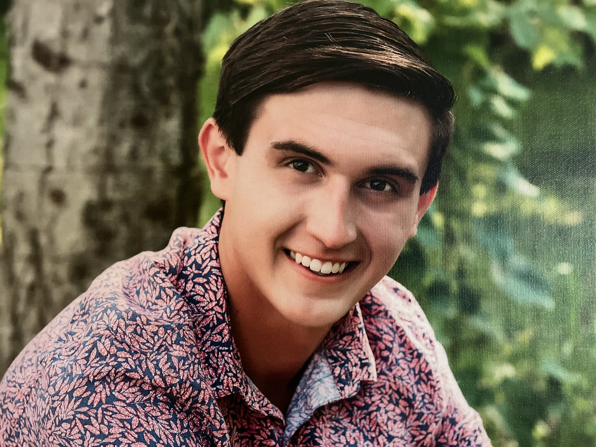

Welcome, it's wonderful to e-meet you.
 2014
20142020
 2025
2025
I'm Steven, a Master's student in at UW–Madison. Being from small‑town Wisconsin, I developed enduring values of hard work, discipline, and community — principles I strive to uphold as a reflection of my upbringing and the place I'm proud to call home.
During my undergraduate years, I spent most of my time conducting ML and Healthcare research, contributing to severals paper and developing a deep understanding of applied data science. Alongside my interest in theoretical coursework, I built a foundation for strong analytical thinking and problem solving.
Now, I'm refining my practical engineering skillset and sharpening my coding fluency every single day. I'm preparing for the next chapter, one where I join a visionary, collaborative team in a fast‑paced environment where ideas evolve quickly and impact runs deep.
Thanks for stopping by my corner of the galaxy.
During my undergraduate years, I spent most of my time conducting ML and Healthcare research, contributing to severals paper and developing a deep understanding of applied data science. Alongside my interest in theoretical coursework, I built a foundation for strong analytical thinking and problem solving.
Now, I'm refining my practical engineering skillset and sharpening my coding fluency every single day. I'm preparing for the next chapter, one where I join a visionary, collaborative team in a fast‑paced environment where ideas evolve quickly and impact runs deep.
Thanks for stopping by my corner of the galaxy.